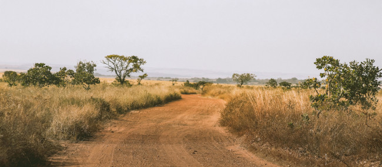

Sobre o Cerrado
O que é o Cerrado?
O Cerrado é um dos biomas mais antigos e ricos do planeta, considerado a savana mais biodiversa do mundo. Ele cobre cerca de 2 milhões de km², o que representa aproximadamente 25% do território brasileiro. Presente principalmente na região Centro-Oeste, também se estende por partes do Sudeste, Norte e Nordeste do Brasil. É conhecido como o “berço das águas”, pois abriga as nascentes de importantes bacias hidrográficas, como as dos rios São Francisco, Tocantins, Paraná e Paraguai.
Apesar de muitas vezes ser visto como uma vegetação “pobre” por causa de sua aparência seca e rasteira, o Cerrado guarda uma diversidade biológica impressionante, tanto em plantas quanto em animais.
Características do Bioma
O Cerrado é marcado por um clima tropical sazonal, com duas estações bem definidas: uma chuvosa (entre outubro e abril) e outra seca (de maio a setembro). Sua vegetação é composta por gramíneas, arbustos e árvores de casca grossa e raízes profundas, adaptadas ao fogo natural e à escassez de água durante parte do ano.
Entre as espécies vegetais, estima-se que existam mais de 12 mil tipos diferentes, sendo que cerca de 35% delas são endêmicas, ou seja, só existem nesse bioma. Essa variedade inclui plantas com uso medicinal, alimentício e ornamental, muitas das quais ainda pouco exploradas pela ciência.
Na fauna, o Cerrado abriga cerca de 850 espécies de aves, 250 de mamíferos, 480 de répteis e anfíbios e mais de 1.200 espécies de peixes. Alguns dos animais mais conhecidos e ameaçados da região são o lobo-guará, o tamanduá-bandeira, a onça-pintada, a ema, o tatu-canastra e diversas espécies de araras.

Ameaças ao Cerrado
Apesar de sua enorme importância ecológica, o Cerrado é um dos biomas brasileiros mais ameaçados. Estima-se que mais da metade de sua vegetação nativa já foi destruída, principalmente por causa do avanço da agropecuária, da monocultura de soja e milho, da mineração e da urbanização desordenada.
As queimadas, tanto naturais quanto provocadas, também têm impactos severos. Elas afetam a fauna, destroem habitats e contribuem para a liberação de grandes quantidades de carbono na atmosfera, agravando as mudanças climáticas. A degradação do solo, a contaminação de rios e o desaparecimento de nascentes são consequências diretas dessas práticas predatórias.
Por que preservar?
A preservação do Cerrado é fundamental para a manutenção dos ciclos da água, da biodiversidade e do equilíbrio climático no Brasil. O bioma funciona como uma “esponja” natural, ajudando a filtrar e distribuir a água que abastece aquíferos e rios em diversas regiões do país.
Proteger o Cerrado significa também preservar culturas tradicionais, povos indígenas e comunidades rurais que dependem diretamente dos recursos naturais para sobreviver. Além disso, o conhecimento tradicional associado às plantas medicinais e aos alimentos nativos tem um valor imenso para a ciência e para o desenvolvimento sustentável.
A educação ambiental, o consumo consciente, o respeito às legislações ambientais e o apoio a práticas de agricultura sustentável são caminhos possíveis para garantir um futuro mais equilibrado — para o Cerrado e para todos nós.